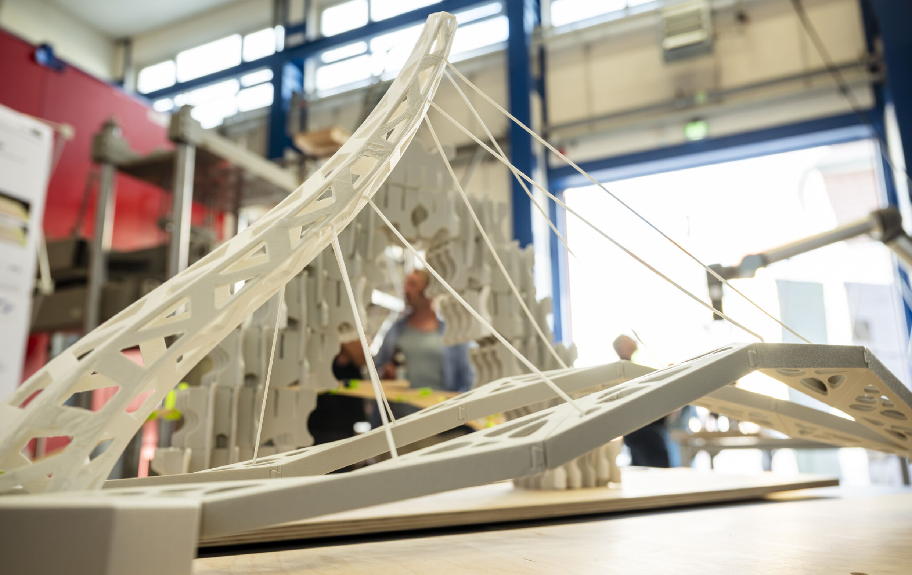
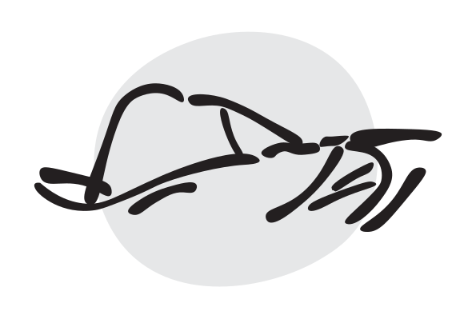
“Robotic Tectonics II” explores the integration of robotic systems into architectural and construction workflows, with a focus on developing automated building processes. Conducted in the D—LAB at the Bauhaus-Universität Weimar, the course combines theoretical foundations with practical experimentation, fostering a comprehensive understanding of robotic fabrication in architectural contexts.
Students engage in hands-on exercises and project-based learning supported by a robot-based teaching and learning environment. The curriculum includes lectures, readings, and material experimentation, aiming to critically examine how robotic tools redefine traditional construction methods and architectural design strategies. The course is funded by the Thuringian Ministry of Economy, Science and Digital Society (TMWWDG) and the Stifterverband.
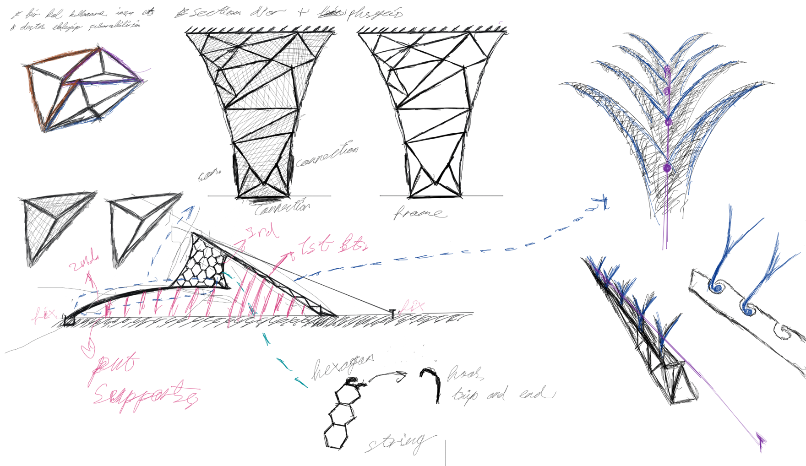
01. FORM FINDING
The design process started with initial concept sketches and 3D modeling using Rhinoceros and Grasshopper. The geometry was based on Voronoi logic and was parametrically adapted to meet both structural and aesthetic requirements. Multiple variations were tested digitally to find a balance between form and functionality.
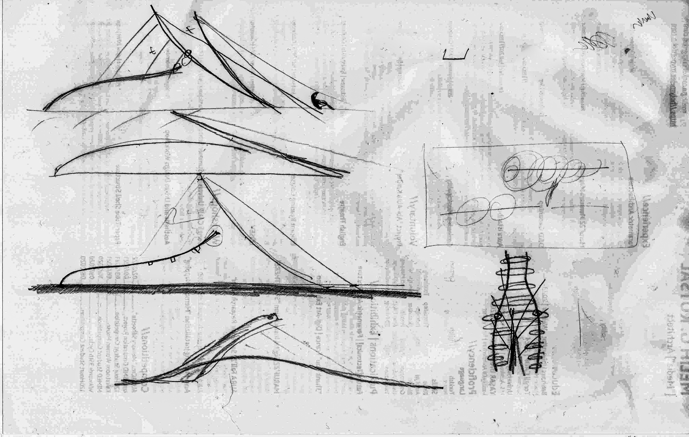
02. PRINTING PATHS
After finalizing the design, we moved on to material exploration and physical prototyping. Several small-scale models and connection tests were carried out to understand tolerances and assembly behavior. The production process was shaped by both digital simulations and hands-on testing. The robotic assembly sequence was refined through trial runs and supported by manual adjustments when necessary.
03. CONCEPT ITERATIONS
This project was inspired by the structural elegance found in Santiago Calatrava’s bridge designs. In the early design phase, Calatrava’s architectural language guided the overall form development. The geometry of the bridge was generated using a Voronoi pattern, aiming to achieve an organic and fluid appearance. Throughout the fabrication process, not only robotic assembly but also human intervention played a crucial role. Several steps—especially during positioning and connection—required manual adjustments. As a result, the project reflects a hybrid workflow where humans and robots collaborate rather than relying on full automation. This approach provided valuable insights into the limitations of robotic fabrication and the complementary role of human input.
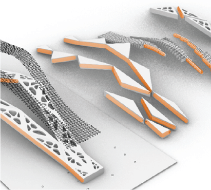
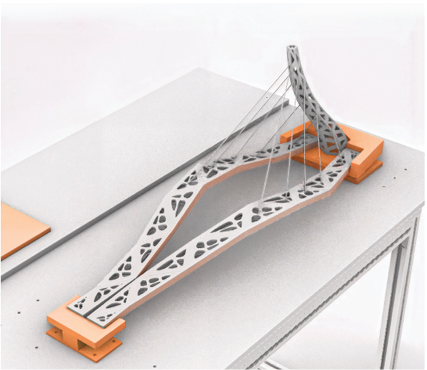
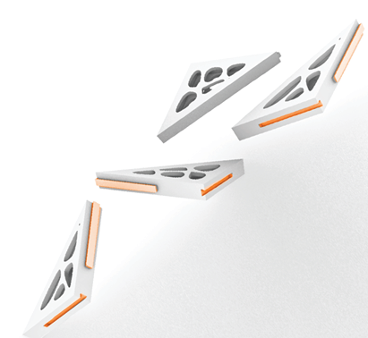
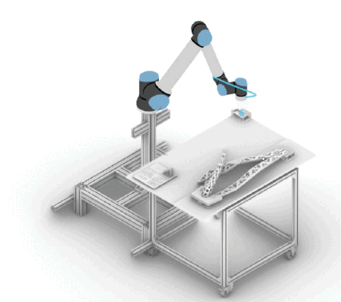
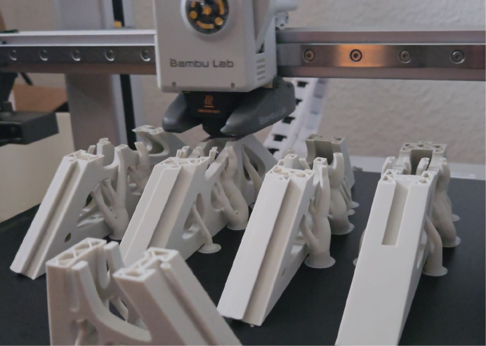
04. ADDITIVE MANUFACTURING
Before robotic assembly, we manually simulated the assembly process by physically mimicking how the robot would handle the parts. This hands-on simulation helped us understand potential challenges in manipulating components with the robotic arm. Subsequently, we tested the robot’s actual capability to grasp and manipulate parts. The robot struggled with some pieces due to their size and weight, which led us to adjust the geometry and redesign the structure into larger, more manageable modules. This iterative process underlines the importance of combining manual experimentation with digital simulations to address the physical limitations of robotic fabrication.
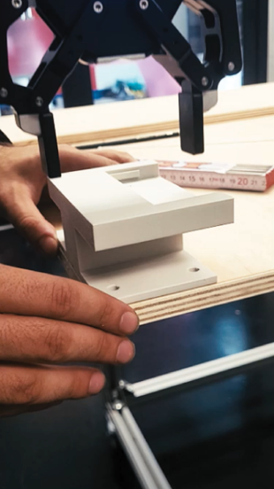
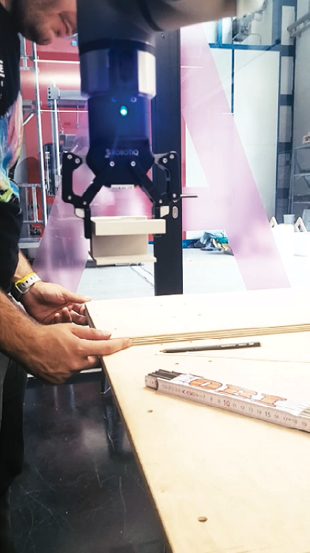
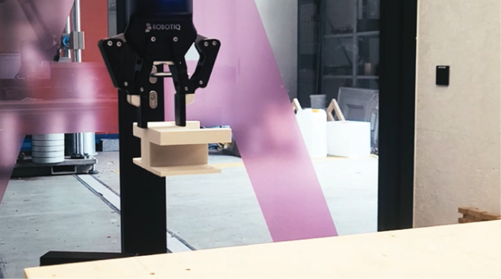
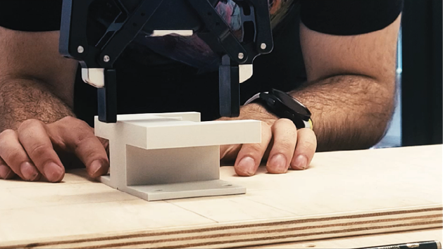
05. CONSTRUCTION PHASE
The robotic arm was programmed to sequentially assemble optimized modular components. Each assembly step was pre-simulated to optimize the robot’s movements and avoid collisions. During the assembly, due to limitations in the robot’s grip strength and reach, manual intervention was necessary for precise positioning and connection of some parts. This collaborative process between humans and robot ensured the structural integrity and stability of the build. The assembly process took approximately [duration] and demonstrated the potential of hybrid workflows balancing automation with human input in architectural fabrication.
During the project, we developed a rail system to test whether the components would fit together correctly. We also tested if the robotic arm could accurately join two parts using this rail mechanism. While the robot struggled with smaller components, these issues were resolved after redesigning the system based on modifications and feedback from instructors. This iterative process highlighted the importance of continuous testing and adjusting to achieve harmony between design and robotic execution. Additionally, physical constraints such as the robot’s grip strength and reach necessitated manual intervention. Overall, these experiences demonstrated that a hybrid workflow—combining human expertise and robotic precision—is essential for successful architectural fabrication.
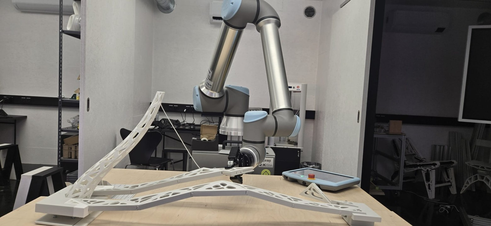